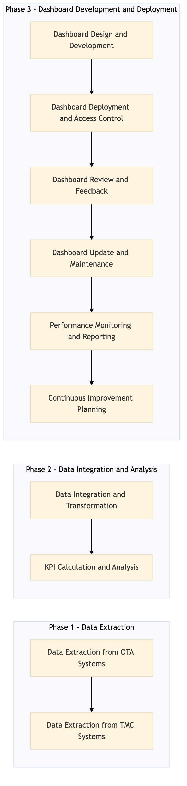

This process document outlines the management reporting and KPI dashboard generation for Finance and Settlement within the Financial Planning and Reporting domain, covering both OTA and TMC systems.
| Trigger | Monthly financial cycle closure |
| Outcome | A comprehensive KPI dashboard is generated, providing insights into financial performance metrics for informed decision-making. |
| Systems | Expedia Open World Partner Central Amadeus NDC Sabre GDS Travelport EVC One Key TravelAds AWS SageMaker Snowflake Kafka Salesforce Tableau SAP Concur T2 SAP Concur Expense Amex GBT Neo/Complete SAP S/4HANA International SOS Cvent Amex Corporate Card VCN SAP Analytics Cloud Workday |

Click to enlarge
| Step | Name & Pain Point | Role | System | Input | Output | KPI | Flags |
|---|---|---|---|---|---|---|---|
| 1.1 | Data Extraction from OTA Systems Handling inconsistent data formats across different OTA systems | Finance Analyst | Expedia Open World, Partner Central, Amadeus NDC, Sabre GDS, Travelport, EVC, One Key, TravelAds, AWS SageMaker, Snowflake, Kafka, Salesforce | Financial transaction data from OTA systems | Extracted and cleaned financial data | Data extraction accuracy rate | ⚠ Exception |
| 1.2 | Data Extraction from TMC Systems Integrating real-time data feeds with existing reporting tools | Finance Analyst | SAP Concur T2, SAP Concur Expense, Amex GBT Neo/Complete, Amadeus GDS, SAP S/4HANA, International SOS, Cvent, Amex Corporate Card, VCN, SAP Analytics Cloud, Workday | Financial transaction data from TMC systems | Extracted and cleaned financial data | Data extraction accuracy rate | ⚠ Exception |
| 1.3 | Data Integration and Transformation Managing large volumes of data with varying structures | ETL Specialist | Snowflake, Kafka | Extracted financial data from OTA and TMC systems | Integrated and transformed financial data ready for reporting | Data transformation efficiency | ⚠ Exception |
| 1.4 | KPI Calculation and Analysis Ensuring consistency in KPI definitions across different departments | Financial Analyst | Tableau, AWS SageMaker | Integrated financial data | Calculated KPIs and analysis reports | Accuracy of KPI calculations | ⚠ Exception |
| 1.5 | Dashboard Design and Development Balancing visual appeal with data accuracy | Data Visualization Specialist | Tableau, SAP Analytics Cloud | KPIs and analysis reports | Designed KPI dashboard | User satisfaction with dashboard usability | ⚠ Exception |
| 1.6 | Dashboard Deployment and Access Control Securing sensitive financial data | IT Administrator | Tableau, SAP Analytics Cloud | Designed KPI dashboard | Deployed dashboard with access controls | Successful deployment rate | ⚠ Exception |
| 1.7 | Dashboard Review and Feedback Gathering actionable feedback from diverse stakeholders | Finance Manager, Business Stakeholders | Tableau, SAP Analytics Cloud | Deployed KPI dashboard | Feedback on dashboard usability and insights | Stakeholder satisfaction with dashboard content | ◆ Decision |
| 1.8 | Dashboard Update and Maintenance Keeping up with evolving business needs | ETL Specialist, Data Visualization Specialist | Snowflake, Kafka, Tableau, SAP Analytics Cloud | Feedback on dashboard usability and insights | Updated KPI dashboard with improvements | Dashboard update frequency | ⚠ Exception |
| 1.9 | Performance Monitoring and Reporting Ensuring high availability of the dashboard | Finance Analyst, IT Administrator | Tableau, SAP Analytics Cloud, Snowflake | Updated KPI dashboard | Monitoring reports on dashboard performance | Dashboard uptime and responsiveness | ⚠ Exception |
| 1.10 | Continuous Improvement Planning Identifying areas for ongoing optimization | Finance Manager, Business Stakeholders | Tableau, SAP Analytics Cloud | Monitoring reports on dashboard performance | Action plan for continuous improvement | Number of improvements implemented | ◆ Decision |